Identification & datation · Guide spécialisé
Comment dater Le Creuset vintage
Quel âge a mon Le Creuset ?
Dater Le Creuset vintage relève d’un processus de comparaison, non de l’identification par une marque unique. Une inscription sous la base, une couleur ou une poignée peut fournir un indice utile, mais établit rarement une date de production à elle seule. La datation la plus fiable réunit forme, marques, construction, émail et références d’époque documentées.
Un indice
une date
Plusieurs indices cohérents
preuve documentaire
une plage de dates défendable
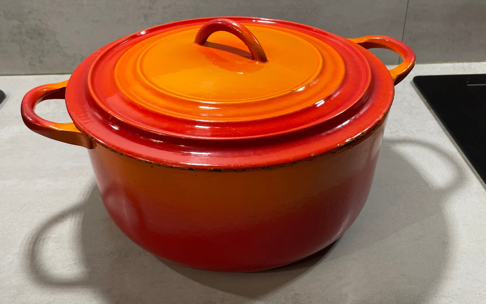
1. Commencer par la forme
Commencez par l’objet avant de chercher un logo ou de vouloir nommer sa couleur. Identifiez d’abord le type d’ustensile observé. Une cocotte conventionnelle, une poêle et une forme de designer ont des fonctions et des logiques de construction différentes ; une comparaison n’est utile que si elle part de la bonne famille d’objets.
- Cocotte ronde ou faitout
- Cocotte ovale
- Casserole ou poêlon
- Poêle
- Terrine
- Rôtissoire ou plat de cuisson
- Forme spéciale ou modèle de designer documenté
Consignez le profil général, les proportions, la courbure du couvercle, la forme des poignées latérales, le bord et la relation entre le corps et le couvercle. Un catalogue documenté peut parfois montrer qu’une forme était proposée à une date ou pendant une période donnée. La seule ressemblance visuelle ne fournit pas cette chronologie, et une forme produite longtemps n’autorise généralement qu’une conclusion large.
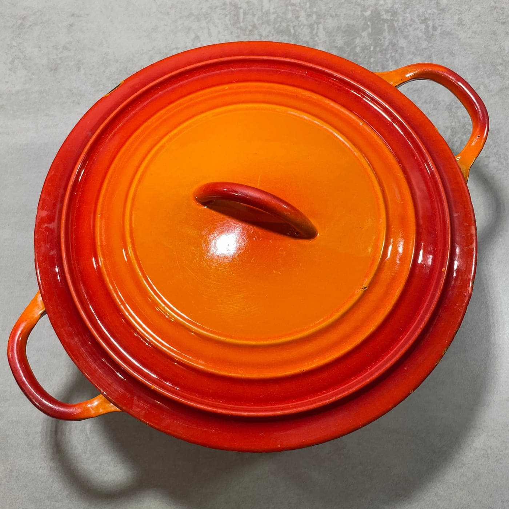
Une référence ancienne documentée
Relevez les proportions du corps, les poignées latérales, le profil du couvercle et sa prise intégrée avant d’interpréter les marques ou la couleur.
L’Archive Series officielle de Le Creuset documente la Cocotte originale en Volcanique en 1925 et décrit expressément sa « prise de couvercle circulaire caractéristique » et son dégradé rouge-orangé. Ces caractéristiques constituent un repère daté important pour la construction des premières cocottes rondes.
Une cocotte conservée qui partage ces caractéristiques ne doit pas pour autant être décrite comme « fabriquée en 1925 ». La source du fabricant établit que ce langage formel était documenté en 1925 ; déterminer la période de production d’un objet conservé demande des preuves supplémentaires.
La forme constitue le point de départ, non la conclusion. Le futur guide Premières cocottes & formes n’ajoutera de comparaisons chronologiques qu’avec des catalogues d’époque ou une documentation équivalente.
2. Retourner la pièce : examiner la base
Le dessous est souvent l’une des zones les plus utiles pour identifier Le Creuset vintage, car il réunit construction et marquages dans une même vue. Photographiez toute la base sous une lumière régulière avant tout nettoyage appuyé. Réalisez ensuite des vues rapprochées bien parallèles à la surface afin de préserver la lisibilité des lettres, reliefs de moulage et traces d’usure.
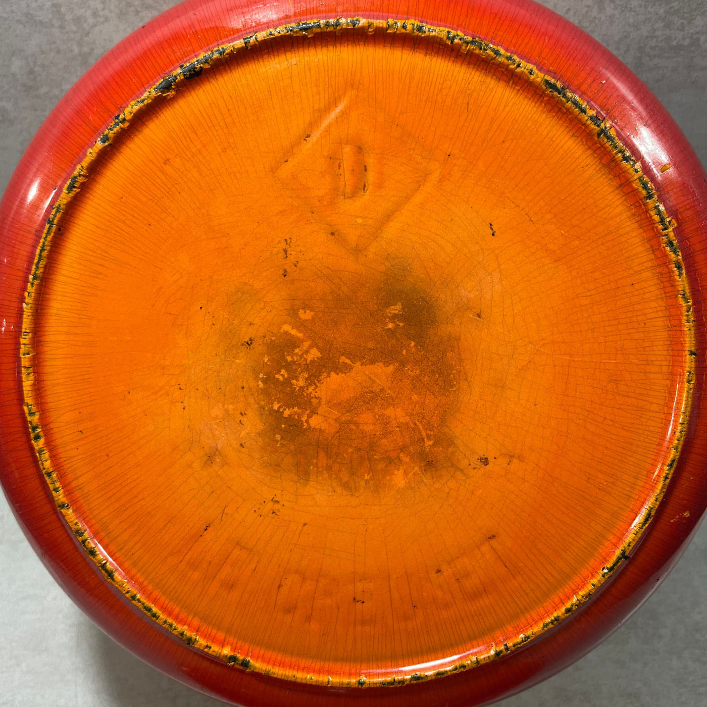
Éléments à relever
- Surface émaillée, partiellement émaillée ou fonte apparente
- Finition lisse, anneaux et autres détails de moulage
- Numéros de taille, de modèle ou de référence
- Lettrage LE CREUSET et sa disposition
- FRANCE, MADE IN FRANCE ou autre mention d’origine
- Typographie, espacement, orientation et inscriptions supplémentaires
La base est enregistrée dans son ensemble avant toute interprétation des marques. Finition, moulage, usure et marquages doivent être considérés ensemble plutôt que traités comme des codes-dates indépendants.
Sur cet exemplaire, les photographies montrent une base extérieure entièrement émaillée dans la famille orangée et rouge du Volcanique, une usure avec pertes d’émail autour du pied, un fin tressaillage de surface sur l’ensemble de l’émail, une marque en creux en forme de losange contenant une lettre au centre du champ de la base et — dans la partie extérieure de ce champ, près du pied — une inscription LE CREUSET venue de fonte, incurvée selon le bord. Ce sont des observations sur la surface de l’objet ; aucune n’est une date.
Les marques moulées ou frappées discrètes doivent être consignées exactement telles qu’observées. Une lettre inscrite dans un losange est une marque de fonderie ou de moule : elle renseigne sur la manière dont la pièce a été coulée, non sur l’année où elle l’a été. Sans clé documentée du fabricant ni comparaison datée de manière fiable, de telles marques ne doivent pas être converties en dates de production.
Regarder le bord de la base, pas seulement son centre
Une photographie de base cadrée sur le centre du dessous peut manquer la marque la plus importante de l’objet. Sur cette cocotte, l’inscription de marque n’est pas au milieu de la base : elle court dans la partie extérieure du champ, juste à l’intérieur du pied, en un relief si faible et dans exactement la même couleur d’émail que son entourage qu’elle disparaît sous la plupart des éclairages. Elle avait été manquée lors du premier examen de la pièce et n’a été lue qu’après avoir photographié et examiné à part la partie basse de la base.
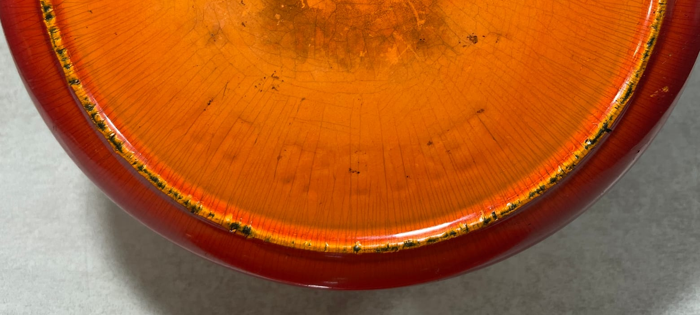
Lue sur place, l’inscription indique LE CREUSET en capitales, venue de fonte avec le récipient plutôt que frappée ou imprimée après coup, et incurvée pour suivre le pied. Elle est à l’envers par rapport à la marque en losange située plus haut sur la base : c’est pourquoi les deux se lisent plus facilement sur des photographies distinctes. L’attribution de la marque est ainsi établie par l’objet lui-même, au lieu d’être déduite de la forme et de la couleur.
Ce que la base ne porte pas
À consigner tout autant : aucune mention d’origine FRANCE ou MADE IN FRANCE nulle part sur la base, aucune contenance en litres, aucun numéro de taille ou de référence de type moderne. Les absences sont aussi des indices — à condition d’être rapportées comme absentes de ces photographies de cet objet, et non transformées en règle de datation pour toutes les pièces.
Une marque de fond doit être interprétée avec la construction de la pièce. La présence ou l’absence d’une inscription ne doit pas être automatiquement assimilée à une date de production exacte sans preuve documentaire.
3. Lire attentivement les marques
Les anciennes marques Le Creuset ne remplissent pas toutes la même fonction. Séparez chaque élément avant d’interpréter l’ensemble. Un nom de marque identifie la maison ; une mention d’origine indique un lieu de fabrication ; un numéro peut désigner une taille ou un modèle ; la typographie peut fournir un indice comparatif. Aucune de ces catégories n’est automatiquement une année de fabrication.
Marque
LE CREUSET
Relevez si le nom est moulé, frappé, imprimé sur une étiquette ou présenté d’une autre manière documentée, ainsi que son emplacement et son orientation. La marque identifie Le Creuset mais ne date pas, à elle seule, l’objet.
Pays d’origine
FRANCE / MADE IN FRANCE
Lorsqu’elle est présente et lisible, la mention d’origine étaye une fabrication française. Elle ne doit pas être transformée en décennie précise sans preuve de la période d’emploi de cette formulation et de cette disposition sur la forme concernée.
Taille ou référence
Numéros
Les numéros rencontrés sur les ustensiles doivent d’abord être examinés comme informations de taille ou de modèle. Un nombre n’est ni une année, ni un numéro de série, ni un code-date, sauf si une source fiable du fabricant ou d’époque démontre explicitement cette fonction.
Indice comparatif
Typographie & disposition
Forme des lettres, espacement et disposition des mots peuvent étayer une comparaison avec des exemples datés de manière fiable. Une typographie semblable est un indice ; une chronologie exige plusieurs exemples documentés et non l’attribution d’une annonce.
Transcrivez exactement les marques, avec ponctuation, retours à la ligne et lettres incertaines. Une photographie rapprochée est préférable à une transcription modernisée, car de petites différences pourront compter plus tard. Les sources officielles consultées pour ce guide ne présentent aucun système universel de code-date Le Creuset ; nous ne réinterprétons donc pas les numéros ordinaires de taille ou de référence comme des dates cachées.
Les marques de l’exemplaire Cook & Collect
Cet exemplaire porte une inscription LE CREUSET venue de fonte, incurvée dans la partie extérieure du champ de la base, une marque en creux en forme de losange contenant une lettre au centre de la base, et une lettre en creux sous le couvercle. L’inscription établit la marque ; les lettres sont consignées comme preuves matérielles et ne sont pas interprétées ici comme des codes-dates de fabrication.
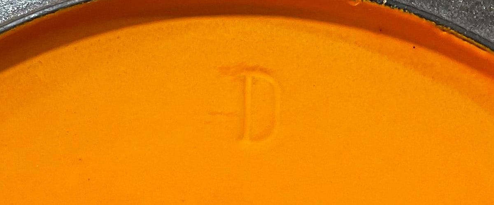
L’inscription de marque et la mention d’origine sont deux relevés distincts et sont notées séparément. Ici la première est présente et la seconde absente, et ces deux faits sont repris dans l’étude de cas ci-dessous.
Chronologie des marques Le Creuset vintage — recherche en cours
Cet emplacement est réservé à une future chronologie fondée sur des catalogues datés, publicités et objets originaux. Il ne sera pas rempli de règles telles que « ce logo signifie années 1950 » sans source établissant cette relation pour le type d’objet concerné.
4. Examiner les poignées et la prise du couvercle
Les poignées font partie de la forme moulée ou d’une construction rapportée ; elles peuvent donc aider à distinguer des familles d’objets, des modèles de designers et des versions documentées. Examinez-les toutes comme des éléments techniques plutôt que décoratifs : les poignées latérales d’une cocotte, le manche d’une casserole ou d’une poêle, et la prise par laquelle on soulève le couvercle — une poignée venue de fonte sur certaines cocottes, un bouton rapporté sur d’autres.
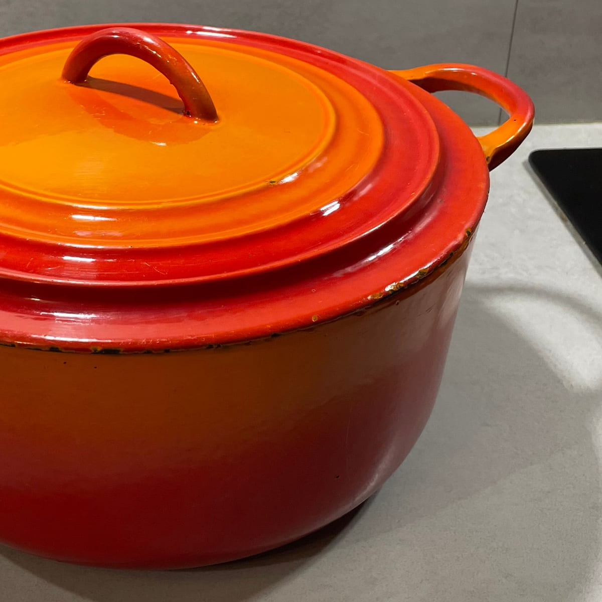
La construction avant le matériau
Pour une cocotte, relevez la forme, la taille, l’épaisseur et la saillie des poignées latérales, ainsi que leur raccord avec le corps. Pour une casserole ou une poêle, notez si le manche est en fonte, bois, matière phénolique, métal ou autre construction documentée, et comment il est fixé. Comparez les proportions autant que le matériau : des matériaux semblables peuvent traverser de longues périodes.
Pour le couvercle, photographiez le dessus, le profil et la fixation. Lorsque le couvercle se soulève par un bouton rapporté, les constructions phénoliques, métalliques ou en fonte peuvent fournir des indices comparatifs — mais le bouton est aussi l’un des éléments les plus faciles à remplacer après usure, casse ou changement d’usage. Lorsque la prise est venue de fonte avec le couvercle, relevez plutôt sa section, sa hauteur et son raccord avec la surface.
Prise de couvercle circulaire intégrée
Contrairement à un bouton central remplaçable, la prise de cet exemplaire est venue de fonte avec le couvercle. L’Archive Series de Le Creuset identifie expressément une prise de couvercle circulaire comme caractéristique de sa Cocotte originale en Volcanique de 1925.
Cette construction constitue donc une comparaison documentaire ancienne importante, mais elle n’établit pas que cet exemplaire ait été fabriqué en 1925.
Lorsqu’une cocotte se soulève par un bouton rapporté, ce bouton peut faire paraître une pièce ancienne plus récente — ou l’inverse — car il est parmi les éléments les plus faciles à remplacer. Que le couvercle porte une prise venue de fonte ou un bouton rapporté, cette prise ne doit jamais constituer le seul critère de datation.
5. Étudier le couvercle
Un couvercle doit être examiné comme un objet séparé, puis comme une partie du récipient. Relevez son profil et sa courbure, la construction du bord, la manière dont sa prise est venue de fonte ou rapportée, le dessous, les éléments internes, les marques de moulage et l’ajustement. La rencontre entre couvercle et corps peut être aussi informative que la surface supérieure visible.
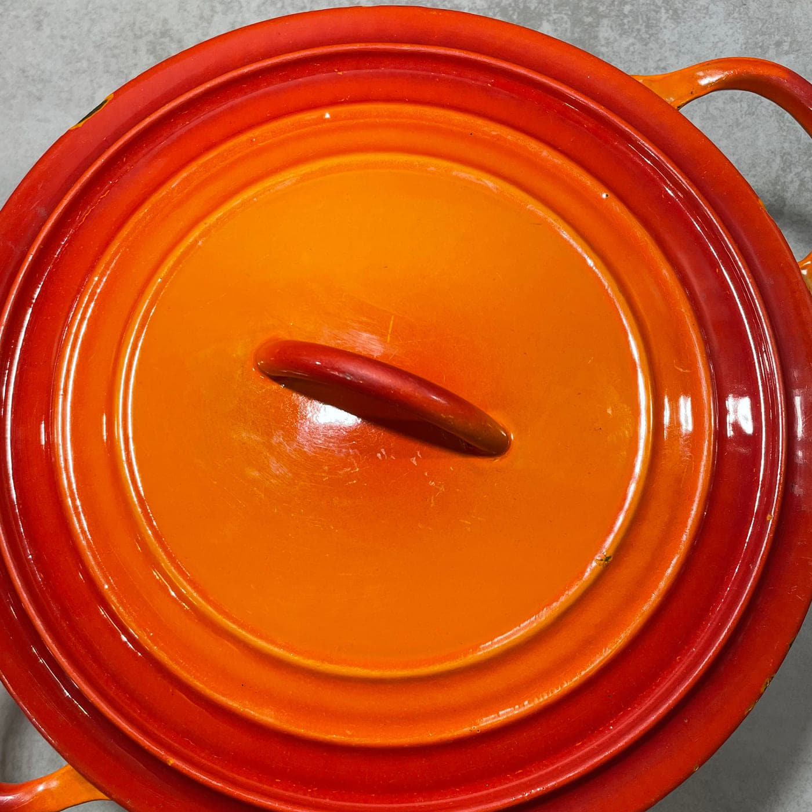
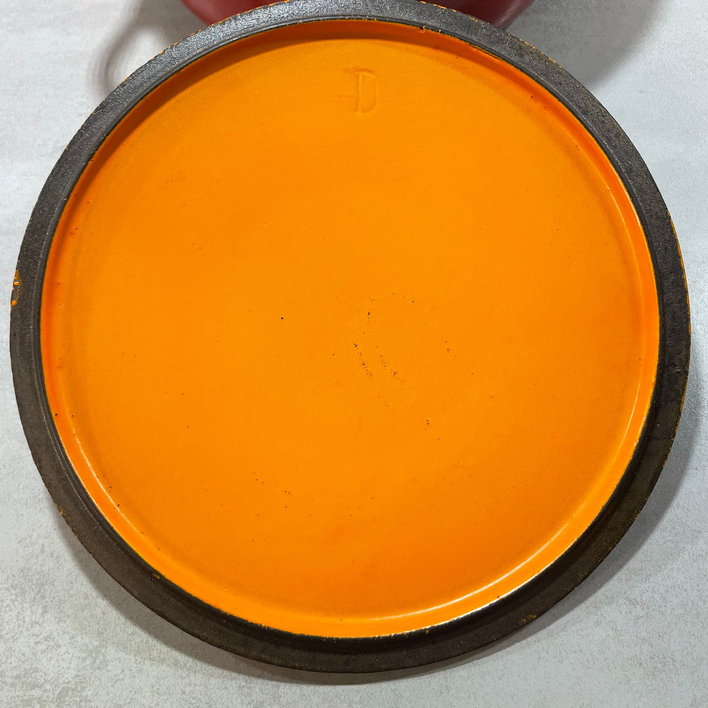
Un couvercle, deux faces
Le dessus renseigne le profil du couvercle, le traitement de l’émail et la construction de la prise. Le dessous renseigne le bord, l’émail intérieur, les détails de moulage et les marques. Les deux faces doivent être examinées avant d’utiliser le couvercle comme preuve de datation.
Vérifiez que le corps et le couvercle présentent des proportions, un émail, une usure et une construction compatibles. Un couvercle peut avoir été remplacé par un exemplaire compatible, ou deux éléments séparés peuvent avoir été réunis plus tard. Cela n’enlève pas l’intérêt de la pièce, mais modifie la valeur du couvercle comme preuve.
Sur l’exemplaire Cook & Collect, corps et couvercle paraissent visuellement cohérents par la famille d’émail, l’usure et la construction. C’est une observation et non une preuve : rien dans ces photographies n’établit que ce couvercle soit sorti de fonderie avec ce corps, et la comparaison documentaire ci-dessous ne tranche pas davantage la question.
Avant d’utiliser un couvercle pour dater une cocotte, établissez que corps et couvercle forment un ensemble cohérent. Si leurs indices s’opposent, décrivez l’écart plutôt que d’imposer une date unique.
6. Identifier la couleur et l’émail
La couleur occupe une place centrale dans l’histoire de Le Creuset. Les archives officielles documentent Volcanique dès 1925, les développements chromatiques ultérieurs, la collection Rayure au dégradé vertical dans les années 1950 et d’autres finitions nommées. Ces sources rendent la couleur utile lorsqu’une finition observée peut être rapprochée avec précision d’un exemple documenté.
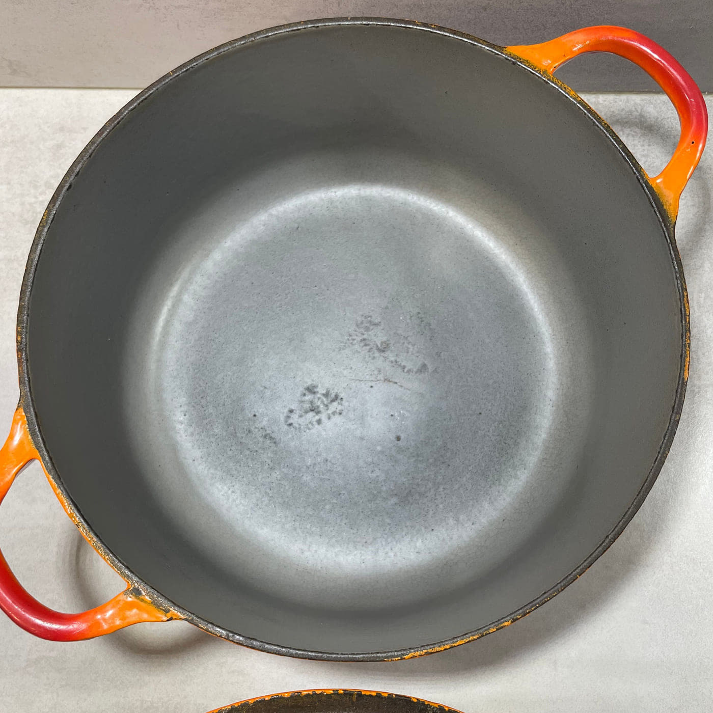
Lire la surface avec prudence
Décrivez d’abord ce qui est physiquement présent : teinte extérieure, direction du dégradé, émail intérieur, aspect brillant ou satiné, usure des bords, taches et réparations. Comparez ensuite à une source. Une couleur peut parfois établir la première période plausible ou étayer une attribution, mais une teinte produite longtemps ne doit normalement pas servir à donner une année précise.
Les photographies ajoutent une autre incertitude. Lumière du jour et éclairage artificiel modifient les teintes ; traitement de l’appareil et écran déplacent les couleurs ; l’émail fonce ou se tache ; les images de marketplace peuvent être fortement retouchées. Autant que possible, comparez l’objet sous une lumière neutre et ajoutez une vue rapprochée de la surface.
Guide Couleurs & émaux Le Creuset vintage à venir
Le Volcanique comme référence documentée
Le Creuset documente le Volcanique dès sa Cocotte originale de 1925 et décrit son dégradé rouge-orangé caractéristique. La finition extérieure de l’exemplaire Cook & Collect est cohérente avec cette famille chromatique historique.
Le Volcanique s’est poursuivi bien au-delà de la première année de la maison : la couleur étaye donc l’identification mais ne peut fournir de date de fabrication exacte.
La couleur constitue un indice complémentaire, non une date automatique. Un nom de couleur ne doit être employé que si le rapprochement avec une documentation du fabricant ou d’époque est défendable.
7. Comprendre les numéros
Les numéros présents sur les pièces Le Creuset vintage sont une source fréquente de confusion. Selon l’objet documenté, un nombre moulé peut se rapporter à la taille, au diamètre, à la contenance, au modèle ou à une autre référence de production. Sa signification doit être établie pour cette forme, non déduite des seuls chiffres.
Un numéro ne doit pas être automatiquement interprété comme année de fabrication, date de production, numéro de série ou code-date Le Creuset. Ainsi, un nombre correspondant au diamètre nominal d’un récipient aide à identifier sa taille, mais ne dit rien de son âge à moins qu’un catalogue daté ne relie aussi cette taille, cette forme et cette construction à une période.
Aucun code-date universel affirmé
Les sources officielles consultées ne fournissent aucun système universel permettant de convertir les numéros ordinaires des ustensiles Le Creuset vintage en années. Nous relevons donc d’abord le nombre et ne lui attribuons une fonction que lorsqu’une documentation l’étaye.
Un tableau vérifié des tailles pourra être ajouté à partir de catalogues d’époque et de documents du fabricant. Tant que les sources seront insuffisantes, ce guide ne publiera pas de tableau complet assemblé depuis des listes en ligne non attribuées ou des descriptions de vendeurs.
8. Comparer la pièce à des exemples documentés
La dernière étape est la comparaison documentaire. Recherchez la même combinaison de forme, poignée, couvercle, disposition de la base et émail plutôt qu’un seul détail identique. Toutes les sources n’ont pas le même poids : notez ce que chacune établit réellement et si elle montre une date de dessin, une période de production, une date publicitaire ou seulement l’attribution d’un vendeur.
- Archives du fabricant
- Catalogues Le Creuset d’époque
- Publicités d’époque
- Collections de musées
- Ouvrages publiés sur le design
- Exemplaires conservés documentés de manière fiable
- Ventes aux enchères et marketplaces, uniquement comme comparaison secondaire
Une notice de musée peut être particulièrement utile pour un objet de designer documenté, tandis qu’un catalogue d’époque peut établir qu’une forme était proposée à une date donnée. Les annonces peuvent révéler des variantes conservées ou conduire à une brochure, mais titres et dates ne sont pas des preuves primaires et répètent parfois des affirmations antérieures non étayées.
Référence documentée — 1925
L’Archive Series officielle de Le Creuset identifie la Cocotte originale en Volcanique en 1925 et décrit expressément sa prise de couvercle circulaire et son dégradé rouge-orangé.
L’exemplaire Cook & Collect documenté sur cette page partage ces grandes caractéristiques. La comparaison établit une référence de dessin ancienne et documentée ; elle ne prouve pas que ce récipient ait été fabriqué en 1925.
Un vendeur décrivant une cocotte comme « années 1950 » n’établit pas cette date. L’attribution devient nettement plus solide lorsque les mêmes forme, poignées, marques et finition correspondent à un catalogue, une publicité ou une archive du fabricant.
Réunir les indices
L’objectif n’est généralement pas de trouver une année exacte. Pour de nombreuses pièces, le résultat le plus responsable sera une plage telle que « vers les années 1960 », « fin des années 1960–années 1970 » ou « produit au plus tôt à partir de » tel jalon documenté. Ce sont des formes de conclusion, non des dates applicables par défaut : les preuves propres à l’objet déterminent la formulation justifiée.
Indiquez quelles observations étayent la période et lesquelles restent incertaines. Si un catalogue documente la forme mais pas la marque de fond, dites-le. Si le bouton semble remplacé, retirez-le du raisonnement. Si les preuves autorisent seulement « Le Creuset vintage, période non établie », cette conclusion est valable et préférable à une précision inventée.
Pour la cocotte Cook & Collect examinée sur cette page, une inscription LE CREUSET venue de fonte sous la base établit la marque, tandis que la forme ronde ancienne, la prise de couvercle circulaire venue de fonte et le dégradé de la famille Volcanique peuvent être comparés à la référence de dessin documentée par Le Creuset en 1925. Joints à ce que la base ne porte pas, ces indices étayent une fourchette de travail plutôt qu’une année ; aucun n’établit à lui seul la date de fabrication de l’objet conservé.
Une plage défendable est transparente : un autre chercheur doit pouvoir voir les caractéristiques, consulter la comparaison citée et comprendre le cheminement vers la conclusion.
Exemples de datation des archives Cook & Collect
Les études de cas suivantes appliquent la méthode ci-dessus à des objets manipulés et photographiés par Cook & Collect. Chaque conclusion distingue ce qui est observable sur l’objet de ce qui peut être établi par comparaison documentaire.
Exemple de datation n° 01
Cocotte ronde ancienne en Volcanique
Dossier de preuves
- Objet
- Cocotte ronde Le Creuset en fonte émaillée.
- Forme
- Corps rond profond, poignées latérales en anse relativement fines et couvercle en fonte ajusté.
- Base
- Base extérieure entièrement émaillée dans la famille chromatique Volcanique, avec une usure importante liée à l’âge, un fin tressaillage généralisé et une marque en losange contenant une lettre au centre du champ de la base.
- Marques
- Une marque en creux en forme de losange contenant une lettre sur la base, et une lettre en creux sous le couvercle. Consignées comme preuves matérielles ; non interprétées comme des codes-dates de fabrication.
- Inscription de marque
- LE CREUSET, venu de fonte en capitales dans la partie extérieure du champ de la base et incurvé pour suivre le pied. Venu de fonte avec le récipient, non frappé ni imprimé après coup.
- Mention d’origine
- Aucune. Ni FRANCE ni MADE IN FRANCE sur la base, aucune contenance en litres, aucun numéro de taille ou de référence de type moderne.
- Poignées
- Deux poignées latérales venues de fonte. Le couvercle porte une prise circulaire/arquée venue de fonte, et non un bouton central rapporté.
- Couvercle
- Profil supérieur à gradins concentriques avec prise venue de fonte. Le dessous documente la construction du bord, l’émail et un D visible dont la fonction n’est pas encore établie.
- Couleur / émail
- Extérieur en dégradé rouge-orangé cohérent avec la famille chromatique historique Volcanique, intérieur du récipient en émail gris.
- Dimensions
- Le diamètre et la hauteur du corps sont consignés dans les photographies de recherche Cook & Collect ci-dessous. Le mètre indique environ 22 cm au niveau du bord, poignées exclues, et environ 10,5 cm de hauteur de corps sans le couvercle. Ces deux valeurs sont des lectures faites sur les photographies et doivent être confirmées par une mesure directe avant d’être publiées comme dimensions exactes. La largeur d’une poignée à l’autre n’a pas été mesurée.
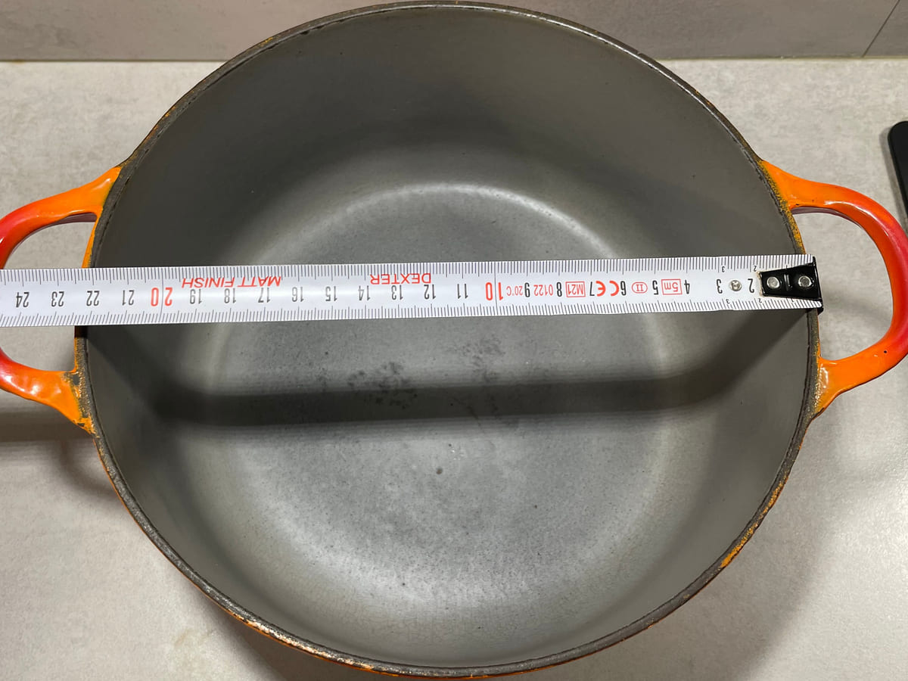
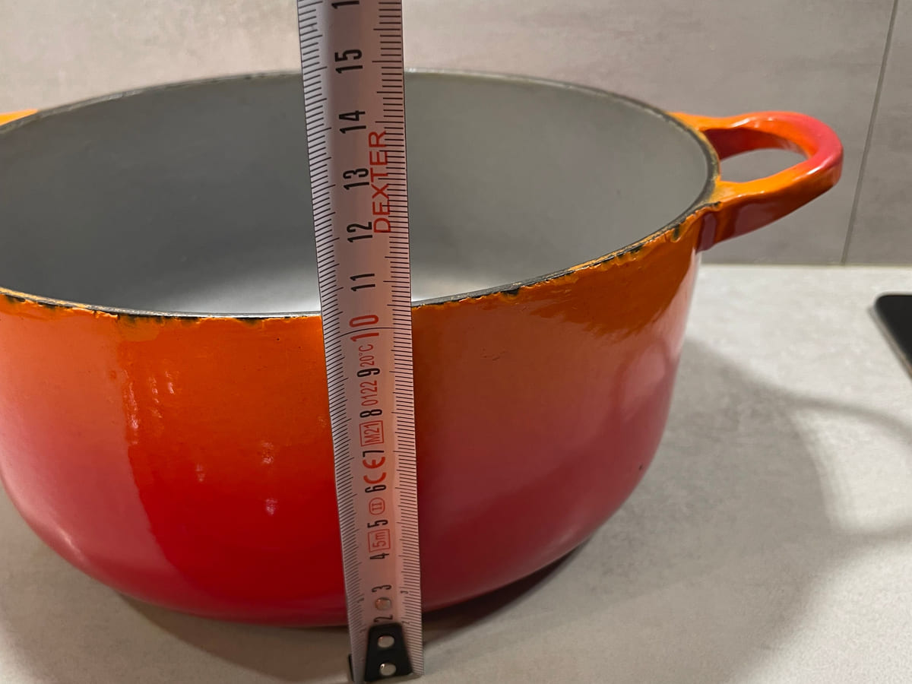
Comparaison documentée
L’Archive Series officielle de Le Creuset identifie la Cocotte ronde originale en Volcanique en 1925. Le fabricant décrit expressément une prise de couvercle circulaire caractéristique et un dégradé rouge-orangé.
L’exemplaire Cook & Collect partage ces caractéristiques documentées, ce qui étaye fortement l’appartenance de son dessin à la tradition ancienne, d’origine, de la cocotte ronde. La référence du fabricant établit le dessin dès 1925 ; elle n’établit pas l’année de production de ce récipient conservé.
Conclusion de datation & justification
- Référence de dessin
- Le dessin de la Cocotte originale que Le Creuset documente en 1925 — forme ronde, prise de couvercle circulaire venue de fonte, dégradé Volcanique rouge-orangé. Cela date un dessin, non une date de fabrication.
- Fourchette de datation retenue
- Estimée entre 1925 et environ 1950 — déduction tirée des marques, non une période de production documentée.
- Conclusion
- Cocotte ronde Le Creuset ancienne, marque confirmée par l’inscription venue de fonte sous la base. Génération de dessin documentée à partir de 1925 ; l’année de production de l’objet reste indéterminée.
- Pourquoi
- La marque n’est plus une déduction : LE CREUSET est venu de fonte sous la base de ce récipient. La forme ronde, la prise de couvercle circulaire venue de fonte et le dégradé Volcanique correspondent aux caractéristiques que Le Creuset documente pour sa Cocotte originale de 1925, ce qui place le point le plus ancien de la fourchette à ce dessin. La borne haute est placée vers 1950 parce que la base ne porte que le nom — sans mention d’origine, sans contenance en litres, sans numéro de référence de type moderne — soit un marquage plus sobre que les bases FRANCE et MADE IN FRANCE courantes sur les pièces ultérieures de l’époque d’exportation. Il s’agit d’une comparaison de marquages, non d’une limite documentée : c’est pourquoi cette borne est donnée comme approximative.
- Niveau de preuve
- Marque : documentée sur l’objet · Date : fourchette probable, borne haute approximative
L’attribution de la marque repose sur une inscription venue de fonte dans l’objet lui-même. La borne basse de 1925 repose sur un dessin documenté par le fabricant. La borne haute du milieu du siècle repose sur l’absence de mention d’origine et de contenance : une déduction raisonnable, mais pas encore étayée par un catalogue, une publicité ou une archive datés.
Quelle est la solidité de la borne de 1950 ?
Moins solide que celle de 1925, d’où le « environ ». Aucune source consultée pour cette page n’établit l’année à partir de laquelle Le Creuset a ajouté FRANCE ou MADE IN FRANCE sous ses bases, ni celle où la marque a cessé de produire des bases portant le seul nom. La mention d’origine découle généralement d’exigences liées à l’exportation : une base qui n’en porte pas est donc aussi compatible avec une pièce vendue sur le marché français qu’avec une pièce ancienne.
La fourchette est donc publiée comme une conclusion de travail ouverte à correction : elle sera resserrée, déplacée ou retirée dès qu’un catalogue, une publicité ou une archive datés montreront quand ces marquages de base étaient en usage. Rien ici ne doit être cité comme preuve que Le Creuset datait ainsi sa propre production.
Niveaux de preuve employés dans ces exemples
- Documenté
- La conclusion est directement étayée par une source primaire ou institutionnelle pertinente.
- Fortement étayé
- Plusieurs caractéristiques cohérentes correspondent à une documentation datée fiable.
- Probable
- Les preuves disponibles convergent, mais une lacune documentaire importante demeure.
- Approximatif
- Seule une période large est défendable et l’incertitude reste importante.
Ces niveaux décrivent la qualité des preuves, non un score de confiance chiffré. Chacun doit être accompagné des observations et sources qui le justifient.
Erreurs fréquentes dans la datation de Le Creuset vintage
- Dater une pièce par sa seule couleur
- Prendre le numéro sous la base pour l’année de fabrication
- Supposer que chaque bouton est d’origine
- Supposer que tout couvercle compatible appartenait initialement au corps
- Traiter la date annoncée par un vendeur comme une preuve documentaire
- Supposer que MADE IN FRANCE suffit à établir une période précise
- Considérer une seule caractéristique comme définitive
- Confondre une réédition tardive documentée avec la production d’origine ; une réédition ne doit être identifiée que si les preuves l’étayent
Questions sur l’âge & l’identification de Le Creuset
Quel âge a mon Le Creuset ?
Commencez par relever la forme, la base, les marques, les poignées, le couvercle et l’émail, puis comparez cet ensemble à des archives ou catalogues datés. Sans correspondance documentaire, une période large — ou une période non établie — est plus responsable qu’une année exacte.
Comment savoir si mon Le Creuset est vintage ?
L’identification repose sur un ensemble cohérent d’indices de construction et de documents. L’âge ne se déduit pas de la patine, de la couleur ou d’un seul élément ancien en apparence.
Peut-on dater Le Creuset grâce aux marques ?
Les marques peuvent étayer l’identification et la comparaison, mais ce guide n’utilise pas de chronologie universelle des logos. Une période précise exige que la même disposition soit documentée sur un objet ou une source datée et pertinente.
Que signifient les numéros sur Le Creuset vintage ?
Selon la pièce, ils peuvent indiquer une taille, un modèle ou une autre référence. Ils ne doivent pas être lus automatiquement comme année, numéro de série ou code-date.
La couleur indique-t-elle l’âge de Le Creuset ?
Une couleur documentée peut étayer une période ou établir une première date plausible, mais les finitions produites longtemps et les photographies imprécises empêchent la couleur de donner seule une année exacte.
La mention « Made in France » date-t-elle une pièce Le Creuset ?
Elle étaye le pays de fabrication. À elle seule, elle n’établit pas une période de production précise.
La prise ou le bouton du couvercle aide-t-il à dater une cocotte ?
Cet élément peut fournir un indice complémentaire s’il est d’origine et documenté. Notez si le couvercle se soulève par une prise venue de fonte ou par un bouton rapporté, car un bouton se remplace facilement. Dans les deux cas, la prise du couvercle ne doit jamais constituer le seul critère.
Recherches & références
Ces sources fournissent des exemples documentés de l’histoire, des couleurs, des formes et des objets de designers Le Creuset. Elles ne donnent pas de clé universelle de datation. Ce guide les emploie uniquement pour les affirmations qu’elles étayent réellement, et la liste s’enrichit à mesure que d’autres catalogues, publicités et études de cas originales sont ajoutés.
- Source utilisée pour l’étude de cas
- Le Creuset Canada, « The Archive Series: The Round Dutch Oven », 8 avril 2025.
Archive officielle du fabricant documentant la Cocotte originale en Volcanique de 1925, sa prise de couvercle circulaire et son dégradé rouge-orangé, ainsi que des jalons ultérieurs de la lignée du faitout rond. Elle date un dessin, non des objets conservés individuellement. Son intertitre « 1925-1945 » est suivi d’un texte décrivant les années 1950 : cet intertitre n’est donc pas employé ici comme preuve d’une période de production. Les photographies de cette page appartiennent à Le Creuset et ne sont pas reproduites. - Archives et patrimoine officiels Le Creuset
- Sources du fabricant consultées pour la chronologie de la maison et certains modèles, poêles, couleurs et formes documentés.
- Références documentaires d’époque
- Documents d’époque datés consultés pour l’ensemble de recherches Le Creuset et pertinents pour les premières cocottes. Ces pièces établissent ce qui était commercialement documenté à une date donnée ; elles ne datent pas un objet conservé.
- Le Creuset (Société Anonyme), Fonderies – Émailleries, Fresnoy-le-Grand, février 1935, 23 p.
Catalogue professionnel illustré documentant la fonte culinaire Le Creuset, notamment des formes anciennes et les gammes Volcanique, Royale, Eureka et décoratives. Notice du catalogue Alain Brieux - Fonderies et Émailleries Le Creuset — buvard publicitaire, 1933. Familistère de Guise, inventaire 2006-29-1.2.
Publicité d’époque conservée par une institution et documentant la première gamme Le Creuset. La publication moderne du Familistère liée catalogue et reproduit le buvard original ; elle n’est pas elle-même un catalogue Le Creuset. Publication du Familistère, page 70 du PDF
- Le Creuset (Société Anonyme), Fonderies – Émailleries, Fresnoy-le-Grand, février 1935, 23 p.
- Collection de musée
- La notice du Centre Pompidou consacrée à la Coquelle de Raymond Loewy montre comment une entrée institutionnelle peut documenter fabricant, designer, matériau et dates pour un modèle précis sans dater tous les exemplaires apparentés.
- Recherches en cours
- D’autres catalogues et publicités d’époque seront ajoutés à mesure de leur localisation et de leur vérification, et les études de cas ci-dessus seront révisées dès qu’une source précisera ou corrigera une conclusion. En attendant, les lacunes chronologiques ne sont pas comblées par des tableaux sans source, des forums ou des descriptions répétées de marketplace.
Poursuivre les recherches Le Creuset
Pour la chronologie du design, les collaborations et la vue d’ensemble des recherches prévues, revenez à Le Creuset vintage — le guide principal.
De futurs guides spécialisés étudieront Couleurs & émaux Le Creuset vintage, Raymond Loewy et Coquelle, Enzo Mari et La Mama, les poêles, Rayure, ainsi que les premières cocottes et formes. Ils restent sans lien jusqu’à ce que chaque page soit recherchée et publiée.